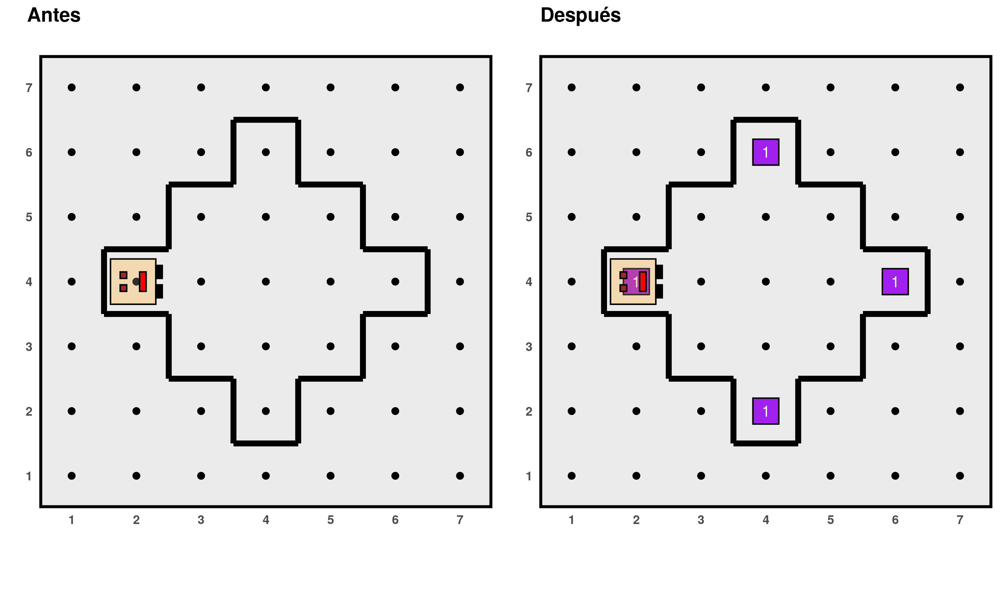
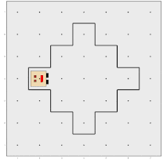
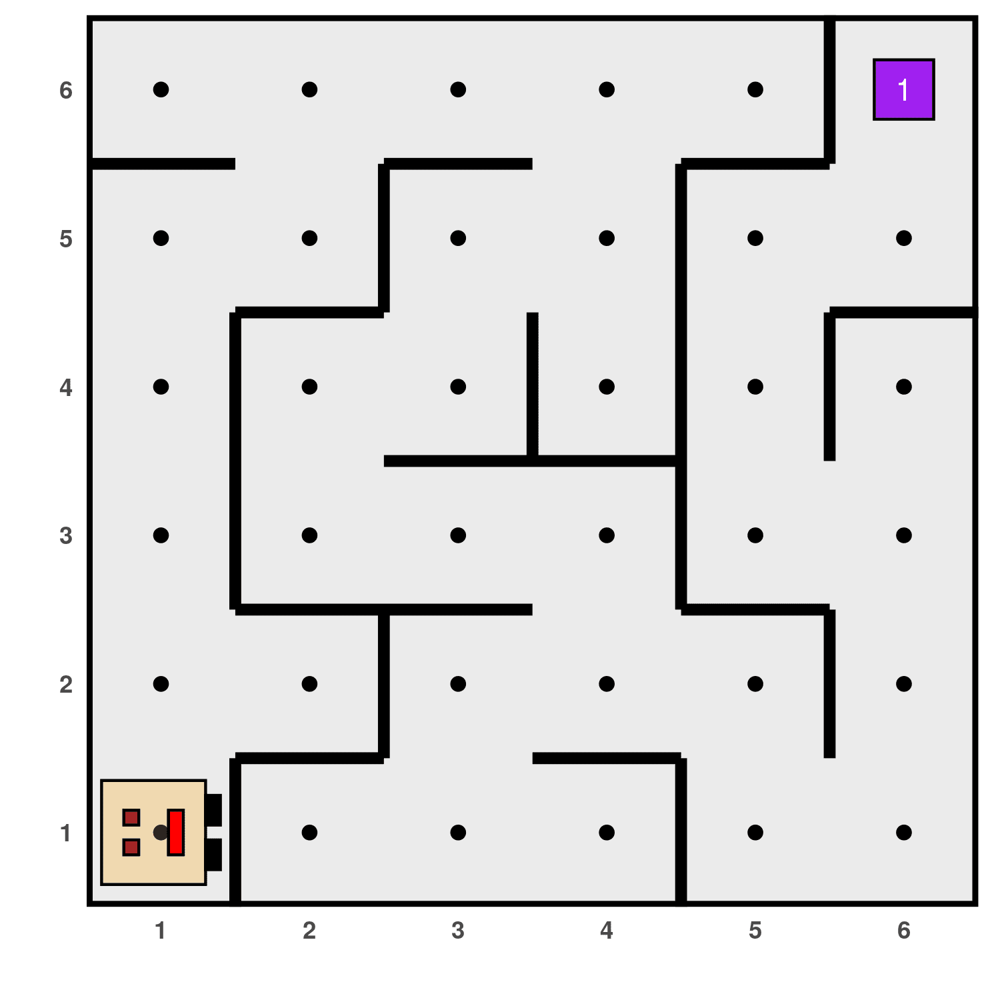
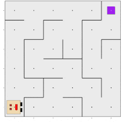

¿Quién es Karel?
karel es un paquete de R creado con el propósito de
brindar un entorno que posibilite la enseñanza de principios de la
programación en una forma dinámica e interactiva, para estudiantes sin
experiencia previa que estén cursando el nivel secundario o los primeros
años de su formación de grado. Karel es una robot que vive y
camina por ciertos mundos, en los cuales puede realizar
determinadas acciones si se lo pedimos, mientras aprendemos a programar
en R.
La robot Karel acompaña en la enseñanza de conceptos fundamentales de
la programación, por ejemplo, el de procesador (Karel), ambiente (su
mundo), objetos (llamados cosos) y acciones (las actividades
que puede realizar). Además, como se puede observar en los ejemplos de
los tutoriales presentes en esta página, junto con Karel es posible
instruir sobre el concepto de la descomposición algorítmica: en
numerosas oportunidades la robot debe cumplir objetivos cuya resolución
requiere descomponer el problema en partes más pequeñas, para cada una
de las cuales los estudiantes deben programar una función en R. También
facilita la ejemplificación del uso de estructuras de control de código
secuenciales, condicionales (if () {} else {}) e iterativas
(for () {}, while () {}).
El primer paso para programar con Karel es generar un mundo
en el cual ella pueda andar, a través de la instrucción
generar_mundo(), aclarando entre los paréntesis el nombre
del mundo que queremos usar. El paquete trae incorporados unos cuantos
pero los usuarios pueden optar por crear otros nuevos.
Todos los mundos de Karel son rectangulares, compuestos por calles
que los recorren horizontalmente (filas) y avenidas verticales
(columnas). Karel siempre se encuentra en la intersección entre una
calle y una avenida (celda), mirando hacia una de las cuatro direcciones
posibles: este, norte, oeste o sur. Los bordes negros representan
paredes que Karel no puede atravesar, solo puede rodearlas. Además, en
algunas celdas hay uno o varios cosos. Karel puede recorrer el
mundo poniendo y juntando cosos por ahí; si los junta los
guarda en su mochila y lleva un registro de cuántos tiene. Finalmente,
Karel solo puede realizar estas actividades: avanzar(),
girar_izquierda(), juntar_coso() y
poner_coso(). Claro, agrupando ingeniosamente estas
acciones básicas se pueden crear otras nuevas, por ejemplo, crear una
función girar_derecha() que produzca tal efecto, haciendo
girar a Karel tres veces a la izquierda. Por otro lado, Karel es capaz
de evaluar ciertas características de su entorno a través de funciones
que arrojan un valor lógico TRUE o FALSE, por
ejemplo: frente_abierto(), hay_cosos() o
mira_al_sur(), de manera que podemos condicionar las
acciones que Karel realiza a la verificación de ciertos aspectos sobre
su posición y su mundo. Una vez que se ejecuta el código con todas las
acciones que Karel debe realizar, se debe correr la función
ejecutar_acciones() y se puede ver el resultado en una
animación creada con los paquetes ggplot y
gganimate.
Con el objetivo de sortear algunas de las barreras idiomáticas que
pueden hacer más desafiante poder dar los primeros pasos en el
aprendizaje de programación, el paquete karel se diseñó de
forma completamente bilingüe: todas las funciones tienen una versión en
español y en inglés (por ejemplo,girar_izquierda() y
turn_left()), así como también las páginas del manual de
ayuda y algunas del sitio web están escritos en ambos idiomas.
La idea para la implementación de este paquete se basa en Karel the Robot, un lenguaje de programación creado con fines educativos por el Dr. R. E. Pattis de la Universidad de Stanford (California, EEUU), quien también escribió el libro Karel the Robot: A Gentle Introduction to the Art of Programming, en 1981. Su nombre es un homenaje a Karel Capek, el escritor sueco que inventó la palabra robot en su obra de ciencia ficción R.U.R. (Rossum’s Universal Robots). Su sintaxis se basaba en Pascal, pero a lo largo de las décadas esta estrategia de enseñanza fue implementada en distintos lenguajes como Java, C++, Ruby y Python. El paquete aquí presentado es la primera implementación de Karel para R. Algunos de los ejemplos incluidos en las viñetas son adaptaciones de aquellos publicados por Eric Roberts en su material Karel the robot learns Java (2005).
Instalación
Podés instalar karel desde CRAN:
install.packages("karel")También podés instalar la versión en desarrollo desde GitHub:
# install.packages("devtools")
devtools::install_github("mpru/karel")Ejemplos
¿Podés escribir un programa para que Karel coloque cosos en los vértices del rombo en en el cual está encerrada?

¿Algo así, tal vez?
> # Cargar el paquete y los superpoderes de Karel
> library(karel)
> cargar_super_karel()
>
> # Crear funciones auxiliares
> recorrer_diagonal <- function() {
+ while (frente_abierto()) {
+ avanzar()
+ girar_izquierda()
+ avanzar()
+ girar_derecha()
+ }
+ }
>
> # Implementar el problema
> generar_mundo("mundo019")
> for (i in 1:4) {
+ recorrer_diagonal()
+ poner_coso()
+ girar_derecha()
+ }
> ejecutar_acciones()
Ahora Karel está en un laberinto. ¿Podemos hacerla llegar hasta el final?

Sí, con este código:
> generar_mundo("mundo009")
> while (no_hay_cosos()) {
+ girar_derecha()
+ while (frente_cerrado()) {
+ girar_izquierda()
+ }
+ avanzar()
+ }
> ejecutar_acciones()
Podés ver más detalles sobre estos ejemplos y otros en la sección de tutoriales.